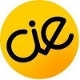

Hello World! Hello Girls!
Rails Girls comes back to Oulu, Finland! During the free two-day workshop dive into the magical world of Ruby on Rails.
We are looking around Oulu for the brave ladies who are ready to start programming! Apply HERE.
Applications are open until March 14th, and space is limited. We'll notify you of your application status by March 17th.
Follow the event on Twitter @railsgirlsoulu.
The event is brought to you by Oulu Student Entrepreneurship Society! 
Like OuluSES on Facebook to stay informed.
You learn designing, prototyping and coding with the help from our coaches.
You need your own laptop, curiosity and a sprinkle of imagination!
Have more questions? Shoot us an email.
| 17:00 - 19:30 |
Installation PartyGet to know everyone a little bit, have some coffee and snacks, and bring your laptop if you can, so we can install Ruby on Rails for you.Speakers: Sari Päivärinta, co-founder of Mobile Brain Bank |
|---|
| 10:00 - 10:30 |
Breakfast and Setting Up |
|---|---|
| 10:30 - 10:45 |
Welcome to Rails Girls OuluWe’ll do some introductions, shake some hands, kiss some babies - wait - wrong thing. We’ll just kick the day off, you get the idea of the day. |
| 10:45 - 12:00 |
Introduction to the Ruby & RailsLet the fun begin! Let’s dive into tryruby.org. |
WorkshopLaunch your first web application. |
|
| 13:00 - 14:00 | LunchWe’ll provide a lunch to fuel your busy minds. If you have any special dietary needs, please let us know beforehand. |
| 14:00 - 17:00 |
Bentobox - Understanding Web Appswe’ll use the Bentobox for a recap of what we’ve learned and how it all fits together. |
Lightning TalksJanne Airaksinen, Differ Group OyInka Piippo, coach |
|
Workshop Some MoreKeep at it! Extend your application. |
|
| 17:00 |
Show & TellWe’ll be wrapping up the day and inviting you to share the application you built. |
Location:
Business Kitchen
Totikatu 23 (4th Floor), FI-90100 Oulu, Finland
Oulu Student Entrepreneurship Society
Oulu Student Entrepreneurship Society aims to foster entrepreneurially friendly culture and interdisciplinary networking among the students of the University of Oulu and Oulu UAS. We are the only student run community in Oulu bringing together entrepreneurially minded students and creating the entrepreneurship ecosystem among the students.
Big thanks to these organizations and people who helped to make this happen!
 Business Kitchen Business Kitchen is the universities’ entrepreneurship hub: both a space and a community located in the city center of Oulu. Come and visit our inspirational spaces, have a cup of coffee and find your favorite working spot in the heart of Oulu!
Business Kitchen Business Kitchen is the universities’ entrepreneurship hub: both a space and a community located in the city center of Oulu. Come and visit our inspirational spaces, have a cup of coffee and find your favorite working spot in the heart of Oulu!
TOL Studies in Information Processing Science provide a solid basis and expertise to work wherever software products and services are developed and applied in global context. ICT field will offer interesting and increasing work opportunities to both genders.
 CIE (Center for Internet Excellence) , research and innovation unit combines multidisciplinary research and networks partners from different fields in a practical setup, where idea creation, observation, measurement and validation is enabled for user-centric innovation and design.
 The School of Business and Information Management of the Oulu University of Applied Sciences is a learning and development environment for practical business administration skills, entrepreneurship, international business, information technology and library and information services.
The School of Business and Information Management of the Oulu University of Applied Sciences is a learning and development environment for practical business administration skills, entrepreneurship, international business, information technology and library and information services.
How much does the workshop cost? Nothing, it's FREE! You just need to be excited!
Who is this aimed for? Women of any age with basic knowledge of working with a computer. We’ve had people of all ages taking part. Most of the speeches are given in English, but small group work can also be done in Finnish. Please bring your laptop.
Can men attend? Yes, but girls are given a priority.
How can I help? If you think you can contribute to organization of Rails Girls, please drop us a line; we might find a place for you ;) Email us
 Maaike Beenen, coach
@PINKMOOSEdesign
Maaike Beenen, coach
@PINKMOOSEdesign